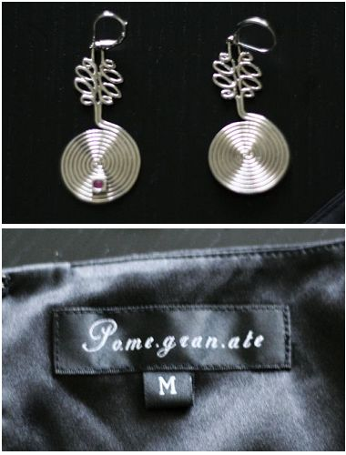
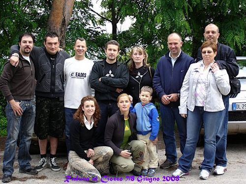
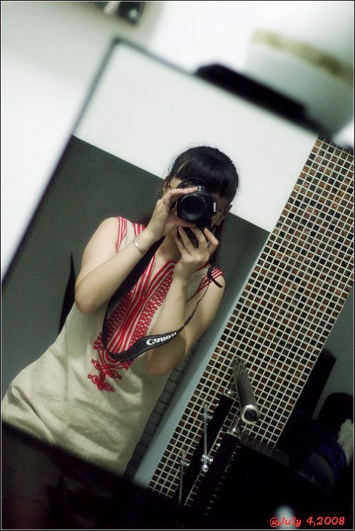
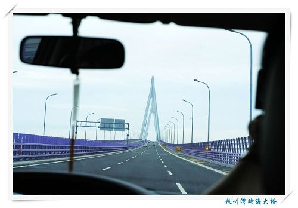
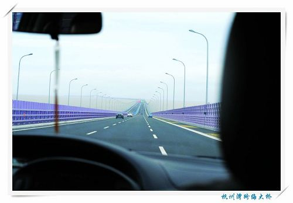
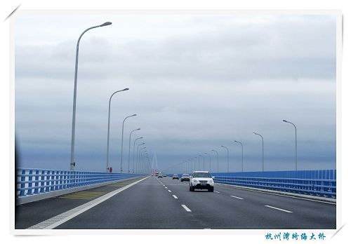
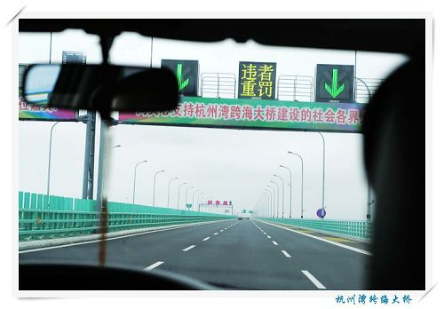
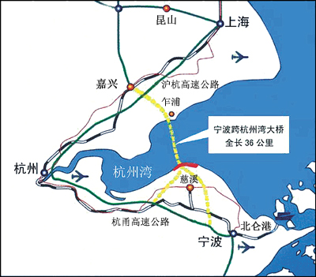
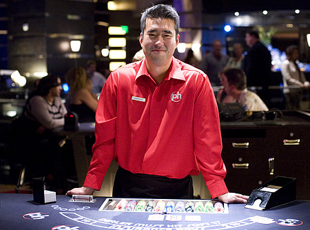

Archives : 2008-07
中国银行网上银行 @ Jul 31, 2008
用南京话讲“太甩”。
上周开通中行的网上银行业务，象国外银行一样中行给客户一个“网上银行动态口令牌”，不是每6秒就是每3秒，口令自动更新，这个口令牌可以用3年。
晚上在家费了老鼻子劲，打了四次中行电话，总算登陆进去了，当俺输入俺另一个银行的信息后，网站告知：非工作时间，操作失败。
又打中行的95566，人家说跨行汇款必须是中行工作时间，即早上8点到下午5点。
这不是太甩，是什么?
*black skirt* @ Jul 31, 2008
这条黑色短裙的设计真让人喜欢，尤其是后面翻花皱折，既可爱又有礼服的感觉。
发现它的时候是玫红色的，怎么也无法找到合适的黑色上衣搭配，还是选择保守的黑色吧，和什么颜色的上衣都可以。
后天起全国“封网”网站全部“不许动” @ Jul 30, 2008
后天，8月1日，全国开始封网，封网期间禁止进行电信网络工程施工、系统割接与升级，以及电路调度、业务开通与调整等工作，直至奥运结束的8月25日。而6个奥运城市的封网已经从7月20日开始，并将持续到9月20日。
名词解释：封网
不是封闭网络，而是“封闭”互联网数据中心机房，网站工作人员和硬件设备都不能进出机房。封网不是针对普通网站和网友，而是针对电信、网络运营商、互联网数据中心公司。在封网期间，禁止进行电信网络工程施工、系统割接与升级，以及电路调度、业务开通与调整等工作。
还要可以让我笑。 @ Jul 29, 2008
今天的晚餐^-^
中午把猪尾骨炖在电饭煲里，下午上完班回家美味的汤已经好了。
照我这样吃下去，不胖才怪，每天坐着不锻炼，肉全堆积在肚子上。
好象目前最流行的健身方式是“瑜伽”，80年代末90年代初电视上就有某个脸化得跟调色板似的女人，在海边岩石或是空旷草地上教人练瑜伽的节目，播放了好一段时间，我那时在练舞蹈，压根对瑜伽没产生过兴趣。现在倒有几分好奇，不过还是倾向血液循环快的健身方式，能带走体内一部分毒素。
去年有个MM从电玩公司辞职，去瑜伽馆学了个初级教练证，接着就和朋友合开了一间小瑜伽馆，这“小”到只有一间房子的瑜伽馆至今已有几十位学员了。这年头胆大的都创业了，剩下胆小的在单位里“诚惶诚恐”地给人打工。
说到瑜伽，又想起最近看到的某人留言：“我身边30多没结婚的男女多的是，4个（交往4个女朋友）也不是很夸张的数目。这年头大家吃饱喝足，对另一半的要求自然高，知情识趣，文韬武略，金融瑜伽，股票房子，还要可以让我笑。”这最后的“可以让我笑”真打动人。
有人询问如何制作以下菜肴，那就写出来共享一下：
猪尾骨炖冬瓜汤：
1、猪尾骨洗净，放水煮开，去脏，然后倒进电饭煲，放生姜、葱、料酒，选择炖汤键；
2、烧好后将所有内容倒进另一个锅，放冬瓜片烧开，炖一小会儿，放少许盐。
建议：如果一次吃不完，最好吃多少盛多少出来，再放盐；
红辣椒炒牛肉片：
1、超市买的酱牛肉片，红辣椒切成圈状；
2、油微热放入花椒，小火烧至微黑，将花椒捞出；
3、将牛肉片放入油里炒，时间不要太长，然后放如辣椒，翻炒几分钟，根据口味放点料酒、盐、味精，不放味精也可以，口味会因为花椒的作用有点麻。
建议：当时家里没有青椒了，所以用了红辣椒。最好与青椒一起炒，色彩上搭配好看，青椒比红椒还多出一些清新的口感。
毛豆炒肉片：
1、毛豆放开水里煮至7成熟；
2、肉片放一只鸡蛋、味精、酒搅拌均匀，腌制15分钟左右；
3、油烧热，倒入肉片翻炒至8成熟，盛出；
4、倒入毛豆翻炒片刻，再与肉片一起，差不多熟时加盐、少许酱油、味精，酱油和味精不加也可以，看自己需要吧。
建议：如果没有很多时间摘菜，可以在菜场买摘好的毛豆，回来洗一洗就可以烧了。肉片可以在周末准备好，用油炒至8成熟，盛出来凉透。用饭盒存放在冰箱里，需要用时，直接拿出来就可以与其他蔬菜一起烧了，最好三四天内能吃完。
米饭：米饭谁都会烧，如果在烧米饭的时候加入一节香肠或肥的咸肉片，烧好的米饭会非常好吃，可以试一试。这顿晚饭我加了三节香肠，光是吃米饭也喷香的：D
饭后别忘记吃点水果，这个季节我挺喜欢吃哈密瓜的，买一个放在冰箱里，吃一点切一点，不浪费。还可以去超市买一只柠檬，每次切两三只薄片泡在凉杯的白开水里，存放于冰箱，方便使用，对皮肤也好。剩下柠檬用保鲜膜或食品袋包起来放在冰箱里，下次使用。
夜晚。
外面象在刮西北风似的，躲在家里打电玩，看电影，拍照：）好不惬意~
惬意的时候讲个小故事吧：
有一只小蚂蚁看到一只小蜜蜂在花丛中采蜜非常羡慕，它又看到一头大象在森林里搬运木头也非常羡慕，蚂蚁想，我总被人踩在脚下，既不会飞也没有力气多么可怜呀。谁知小蜜蜂和大象却向它诉苦，我们每天吃力地采蜜，吃力地搬运木头，日子多不好过呀，要是只蚂蚁该多好啊，多自在，想爬到哪里就爬到哪里。听到这里，小蚂蚁终于明白快乐原来就在自己身上，是一种感觉呀！
For The 2007 Women Drivers Award
WOW ! ! How the heck...?!?
Oh never mind... CONGRATULATIONS ! !
This concludes the 2007
Women Drivers Awards Ceremony.
Thank you to all contestants for giving
us all a reason to laugh & smile
我感兴趣的就是我自己。 @ Jul 27, 2008
“我感兴趣的就是我自己。”
和家人在商场闲逛的下午，忽然很坦然地在心里对自己说了这句话。
家人总是在见面的时候提到甲、乙、丙、丁...常常叨叨这个叨叨那个的，我根本不关心这些人，也没心情和精力去弄清楚这些人心里想些什么做些什么，今天打的哈欠明天穿的衣服，住了多大的房子开着什么摸样的车，他们和谁结婚和谁分离。这些关我屁事？
无意指责家人，可还是会有些看法。
那些精力可以用来学习烹饪，品尝美食，周游世界，可以阅读一本好书，看一部好电影，淘张喜欢的碟子，养养花种种草，那些精力可以用来与知己愉悦地聊天聚餐...把那些精力浪费在美好的事物上，总比浪费在窥视别人的生活上要有意义的多！
当你仇视别人的财富、权利；
当你评论别人衰老、嫉妒健康和美丽；
评判并憎恨别人被爱，嘲笑贫穷与落寞时.....请给自己留一个台阶下。
你也会衰老，会有矛盾的情感，妒忌说明你并未拥有，某一时期你也曾贫穷或是落寞...
把有限的精力放在窥视评判别人的生活上，你自己的生活又在哪里？
想来。
总是对别人生活感兴趣的人。
是因为没有自己的生活。
很多欲望是难以“两全齐美”的。 @ Jul 27, 2008
在同一时期，两个朋友谈到欲望的话题。
几乎，不谋而合：欲望使人年轻。
谈到欲望，想到一篇杂志上的文章，记不大清了，大概是讲欲望=荷尔蒙时代之类的内容。欲望可能真与荷尔蒙有关？ 雌性或雄性荷尔蒙分泌多了，当然充满了动力。当然，年轻。
大师们畅言“无欲无求”，不是一般人能达到的境界。那得经历怎样的人生，还得有一颗另类的脑袋，加上修行的功利了得，是不是才真正能做到“无欲”？
我认为“无欲”=“无伤”。
无伤，是不是才是人们追求的结果呢？
很多欲望是难以“两全齐美”的。
人们眼中只有穿着真实外衣的谎言，却怎么也无法接受赤裸裸的真实……
这社会人格分裂的人越来越多。
也是很简单的例子：你去观察一下那些被家庭严厉管教的孩子，他们大多喜于、并擅于撒谎，技巧也比那些宽松而又开明家教下的孩子要高超。尤其是教师家庭出来的孩子，我一朋友之前找了个教师职业的GF，没多久就分了，问他为什么？他说：“她太喜欢管人了。”
现实是，这样的孩子你也不能说他们坏，至少他们希望大人们满意，而自己想做的事情也无法舍弃，于是分裂吧。成年后的他们会保有这种习惯，语言上习惯于欺骗，连表情和形体都能配合得天衣无缝。基本不用进戏剧学院或是表演院校深造。
你痛苦吧，说明你人格分裂的不够彻底。
所以彻底分裂，是好事。
爱自己，得多自私才能做到？ @ Jul 26, 2008
很简单的例子：
两个人一起生活，谁来买菜烧饭？谁来收拾家务？
忙的那个，挣钱多的那个恰恰是最有权利不去做这些的人。
因为对方对家庭的经济贡献大。
显然家务落到另一个人身上。
然而，情况总不会是一样的。
挣钱多的那个往往也会是承担家务最多的那个。
有人说：“可以两个人一起做这些家务。”
这是很理想完美地解决了矛盾，谁不想呢？
我的女友曾坦率地对我说：“妈的，我也工作也挣钱，凭什么总是我烧饭给他吃？他出去应酬，从星期一到星期五在外面吃喝玩乐打牌搓麻将泡酒吧的时候，压根没想过我在哪里，我一个人的感受是怎样的？某天他在家了，我就必须在家里呆着，否则电话一个接一个地打。”丈夫和妻子是不是可以“彼此彼此”地平等相处一下呢？显然，很难。除非其中一个妥协，不妥协就是“崩”，不是崩溃就是分裂。
烧饭婆总是老的比那些别人承担了大部分家务而自己快活逍遥的女子快！
有个朋友的太太是从来不下厨房的，人家说油烟对皮肤不好，两个人要么回父母家蹭饭，要么吃社交餐，实在不行就买点速冻食品回家水煮了吃。
听钟点工说某栋某单元的客人，女主人不上班，丈夫做生意的，一个10岁大的儿子。每次去她家打扫3个小时都忙不完，几天吃过的碗筷全部堆在水池里等着保姆来洗，卧室的地上也有吃完后随地摆放的碗筷。衣服等着保姆来洗，先前晒好的衣服等着保姆来叠，家里乱七八糟，谁说职业主妇就必须做家务呢？
仅从烧饭上来看，有实力的家庭也可以顿顿去饭馆解决。
先前提到自己动手才会感受到家，正是因为生活中这些微小真实的细节，才构成了我们对家的深厚感情。
有了生活体验，再看到那些光鲜亮丽、精致的女子，我最先想到的是她是否做家务，做多少家务？她的家里请了长期保姆，还是婆婆和妈妈代劳？如果她们说她们做家务，我会肃然起敬！把自己收拾的美丽，还能把家里收拾的干净利落，照顾好丈夫孩子的三餐，不用任何人帮忙，对于现代职业女性那真是很伟大的能力。
爱自己是不是有些难？
爱自己，等于少付出，或不付出。
以前我总强调女人应该多爱自己一些，那得多自私才能做到这一点？
心的感冒 @ Jul 24, 2008
？：测试结果是中度。
！：那就不要忧郁。
？：又不是在饭桌上点菜。
！：我的心就不会感冒。
？：想象我死后电视台采访你，你会怎么说？
！：你最大的兴趣就是你自己。
忧郁症(hypochondria;hypochondrium)，也被称为「心的感冒」，近年来，在高压力社会中，几乎已成为最流行的精神文明病，世界卫生组织等的研究表明，平均每一百人中就有三人患有忧郁症，其中因为忧郁症所带来的身体疾病，甚至自我毁灭的例子更是比比皆是。
To blossom ... @ Jul 23, 2008
去休产假的好友家一起吃晚饭。
她，白皙丰润，比怀孕时滋润许多。
她的小公主，皮肤过敏，小手不停挠自己的脑袋，大人们给她戴上手套。
摸样越来越象爸爸的公主。
令人琢磨不透的生理。
女人平时的忧郁在雌性激素积累阶段，一旦“老朋友”来过，忧郁也就消失了；
而生育后的女人在雌性激素迅速减少之后，却往往因为一点小事而烦恼。
恋爱、结婚生子，抚育孩子长大成人...
岁月推着女人往前走，女人就这么度过了一生？
“真希望人生可以闪亮一次，哪怕就一次。”
“‘闪亮’的定义是什么？”我问。
从她家出来，夏天似乎要静止了，让人感到快乐。
聊天，既单纯又并不那么重要，就象刚刚逝去的、多余的时间一样不能给予人们任何东西，只在沉静舒缓中成为你唇边回味无穷得微笑。
home is the land with love. @ Jul 23, 2008
朋友问周末是否愿意一起去黄山？
大热天去黄山实在难以接受，连院子里的野猫都很少见它们出来活动了，只是别人家的大白狗每天早晨依然叫得欢畅。
暑气正旺，还是呆在家里比较好。
周末可以用来看电影，烧饭和收拾凌乱的衣物。
最近还特别想看书。
自己动手，家才是家，不是吗？
这城市里自己动手做家务的女人还多吗？
尤其是职业女性。
有时候，女人对女人的期望，比男人对女人的期望还要高。
由钟点工打理的家，即使窗明几净，却仍然有疏离感。
@残缺的aRt @ Jul 19, 2008
早晨。
起床。
未洗漱。
坐到电脑前。
习惯的先到俺的茶上看看，看看俺喜欢的那些页子，喝着午夜后泡的铁观音（因为是凉的），之后把上周五在公司来不及完成的工作做完~
周末。
未出门。
做了许多菜，也为工作日的晚餐准备。
还是不适应柴米油盐的生活方式，周末一部电影都没看，全泡在电脑和厨房上了。
没有父母在家务琐事上帮忙，自己就会忙成这个残样。
人生不过是反反复复走前辈的老路罢了。
别人的精彩只是你看到的部分。
那么。
说服自己。
努力适应吧。
女人哭吧哭吧，不是醉。 @ Jul 18, 2008
晚上煎了两个油炸馒头片，弄了两个菜，被油炸馒头腻住了。
看了会儿电视，接到醉了几分的女友的电话，仍然是哭。
感性的女人醉了是不是大多都爱哭呢？
她问我女人要什么？
女人，要什么？
也许连女人自己都不清楚。
“要爱。”我说。
女人把每一次爱情都当作最后一次去爱，那将是怎样的情形？
我很佩服那种四处放电，分摊给身边每个男人一点点“爱”情的女人。她们从不会伤了自己，还能平衡各种关系。她们希望爱慕她们的男人越多越好。保持暧昧才能自由进出各种关系，友谊还是爱情就看她们的心情。而把每一次爱情当作最后一次去爱的女人似乎显得愚蠢了。
我已描绘不出“爱”这种东西的形状、颜色和气味。在丧失部分表达欲望之后。
爱，无时无刻都存在着，是女人一生的追求。
大多数男人都会以自己的方式去爱着女人，而不是以对方需要的方式去爱。男人以他们自己认为的快乐为快乐，他觉得自己快乐，他爱的女人也应该快乐。这种长期相处方式下的女人才是最最寂寞孤单。
这让我想起前天晚上看Anne Hathaway主演的电影《HAVOC》，印象最深的一句台词是：其实你很寂寞。
故事叙述一个富裕家庭的少女到东区贫民窟去找刺激，遇上贩毒团伙.....就这么个故事。深层次上告诉家长们要常常陪伴未成年人，不仅仅是在物质生活上给予满足。更深层次也可理解为无论少女还是妇人，男人还是女人，都需要陪伴，需要真正了解并体会她的情绪和内心需要。可是人们几乎都是本位思考，极少数人会从对方的角度去看问题，那么也无从感受到对方真正的心理需要。人们总是想方设法地去打探对方，从身体到心理到隐私...各方面，但是，我们很少会去关注对方真正的需要。
所以...女人哭吧哭吧，不是醉。
《LA FINE è IL MIO INIZIO》节译 @ Jul 18, 2008
原文来自"农妇的自然生活"
翻译了Tiziano Terzani的《LA FINE è IL MIO INIZIO》中的部分章节，为好奇的同学起抛砖引玉之用。
……
另一个在我们长大成熟的过程中很根本的问题，就象以某种方式发生在我身上的，是我们同欲望的关系。欲望是我们巨大的动力。如果哥伦布没有要找到通往印度群岛新航线的欲望，他不会发现美洲。人类所有的进步，如果你想这样定义的话，或者衰退，所有的文明开化或者退化都来自欲望。各种类型的欲望，从最简单的开始，肉欲，那种想要拥有他人肉体的欲望。
欲望是种动力，我不否认。欲望是很重要的，而且决定了人类的历史。但如果你开始仔细观察，这些我们永远无法摆脱的欲望到底是什么？
尤其是今天，这个社会怂恿我们不断萌生并选择那些最荒唐的，最物质的欲望，换句话说那些大排档式的欲望。如此这般的选择是无用的，荒唐的，卑微的。真正的欲望，如果我们非要有一个的话，应该是做回自我。一个人渴求的唯一一件事应该是不做选择，因为真正的选择不是在两种牙膏，两个女人或是两辆汽车中进行的。
真正的选择是拥有自我。如果你习惯了或者保持练习，如果你不断反省，反省！你会明白那些欲望是种奴役。你的欲望越多，束缚就越多。渴求某种东西到了茶不思饭不想的地步，你就成了欲望的奴隶。
那么你在更成熟，年岁再大一些的时候会明白这些…
笑。
…你会觉得自己的那些欲望，包括那些曾经苦苦追求过的欲望是那么的好笑，那些欲望一钱不值，和生命里其他的东西一样短暂，如昙花一现。这样你开始学习摆脱欲望，尝试从里面解脱出来。包括人生最后一个欲望，每个人都会有的：长命百岁。有人说：“好吧，我不要钱，不要名，什么东西都不买了，但至少我想要一枚药丸让我再活十年！”
连这个欲望我都没有了，的确是没了。
我是幸运的。因为在喜玛拉雅山上那个小房子里的寂寞年月，让我明白了我是无欲无求的。我只要一点水喝，而水就在那里，在那个动物们都去饮用的泉眼里。只要吃一点米饭和一点火烤的蔬菜。还需要什么呢？绝对不是去电影院看最新出场的大片。与我何干呢？！会改变我的生活吗？在这个时刻，我没有别的愿望，没有。因为当下摆在我面前的也许是我有生以来碰到的最奇特，最古怪，面目全新的一件事了。
正是如此我才说我不想再在这世上停留，因为这一轮人生再激不起我的好奇心。我已经里里外外看了个通透，它的每个边角我都经历过了，而且对那些应该能煽动我的欲望都失去了兴趣。那么死亡就真正变成了…
笑。
...唯一一件崭新的事情，因为我还从来没有见识过，从来没有体验过。我只见过别人的死亡。（Tiziano Terzani）
离经叛道、道德沦丧：《Funny Games》 @ Jul 16, 2008
如果来得及晚上睡觉前会看一部电影，渐渐习惯了12点睡觉7：30起床的作息时间。
昨晚看的是《Funny Games》，老片新拍，女主角是出演《金刚》的Naomi Watts，导演是Michael Haneke。
围绕着一片湖水是许多有钱人郊外的度假别墅。
Georg一家三口来到郊区湖边的房子里度假。
两位白衣年轻男孩Paul和Peter，戴着白手套，彬彬有礼，连说话的方式也是那么斯文。那两张男孩的脸至今想起来仍然耿耿于怀、不寒而栗！温文而雅、彬彬有礼，象是家境富裕的孩子，有着良好的教育，礼貌的走进陌生人的房子......
Paul和Peter犹如做游戏一样杀害了Georg一家三口。象是阅读一本书、看一场电影、打电玩一般轻松自然，充满乐趣。所谓的Funny Games自然是他们二人的“Funny Games”。
是Georg三口之家最后的假期。
Paul绘声绘色的向受害人一家陈述Peter凄惨的身世，正如大部分影片一样把恶魔的变态行径归咎于童年不幸了事。还有小船上匕首的设计。影片之前专门给了它一个特写，我本以为这把匕首可以帮助Georg一家脱离险境，电影恰恰没有按照传统模式进行而是反其道行之：Paul有着良好的家庭，最后的希望“匕首”也轻描淡写地被丢到了湖里。正义没有战胜邪恶，好人没有打败坏人，影片导演Haneke强行灌输给你的，可这个“强行”却到了霸道、完全不讲人性的地步，这是一部具有强迫症的电影，令人感到不适。
让人心有余悸的是我们该如何防备现实生活中正常面孔下心理扭曲的人？
尤其是所谓的“精英”中恰恰变态的不在少数，夸夸其谈着真理、真爱、正义，实则象Paul和Peter一样离经叛道、道德沦丧，精神分裂的一种。
演绎因茶而生的爱情故事 @ Jul 15, 2008
中国和日本都是著名的“茶国”，怎样表达它们茶文化的区别？谭盾归结为一句话“茶令日本人的生活更加艺术化，令中国人的艺术更加生活化”。
由谭盾作曲的歌剧《茶》将于7月30日在国家大剧院首演。谭盾称，《茶》的配乐运用了很多自然声响，他创作的水乐、纸乐、陶乐，以及水琴、陶鼓、纸鼓等乐器都将令观众耳目一新。为让中国版《茶》走向世界，演员们将用英文演唱。住在北京的人们有耳福啦~
不过谭盾也说，他以前虽然喜欢喝茶，但其实不会喝，直到后来创作歌剧《茶》时，才对茶有了更多了解、认识和感悟，喝茶的观念发生了转变，才知道了喝茶的真正意味。谭盾说，歌剧《茶》是借唐代的关于茶的故事来说茶道、说男女、说生死、说未来。看来谭盾念的“茶经”，已不止是关乎茶或茶道，更是借茶抒怀言事传情说爱了。

谋生，亦谋爱。 @ Jul 14, 2008
晚上在新世纪广场的雍福会吃公务餐，一桌十来个人。
这种场合不知是亲近还是疏离的，亦或是处于边缘。
尽量躲避这种饭局，怕掠起人性尘埃，只有工作是相联的。
吃饭少不了说话，平时大多数时候我们都在说废话。 不说废话的有三种：一种是性格决定的；一种是处心积虑；另一种轮回，反朴归真了。我自讨厌话多的，以前我也话多，不说话怕冷场，不说话怕怠慢了自己，不说话显得自己寡薄，如今却渐渐少了大半，常常一片空白，少去的大半想来也是废话吧。
住“乡下”久了，眷恋清净、安静。可时不时仍涉足于这些那些的寒暄应酬、非己愿的明争暗斗，象是荷尔蒙与功名利益的旁观者，你真能与世隔绝，一了百了？人，大多逃脱不了功名的诱惑，尤其是男人。然，那颗心究竟可以安放在怎样的心态上顺畅呼吸？
得一朋友推荐看《天道》，精彩到人家夫妻二人可以从傍晚看至凌晨4点睡下，周末半天看过几集，说左小青的感觉和我很象，没发现。倒是王志文的台词说得跟哲人一般耐人寻味，不同于世俗的世界观价值观。（享受的台词还有《大明宫词》）看到男女主人公即将恋爱便止住不再观看，悲戚自不必说，怕累了眼睛。如丁元英经历大风大浪，荣辱不惊的周遭有几人？得利者沾沾自喜，得运者夸夸其谈，我们围绕的不过是个“利”字。其实，不过是平凡女子，谋生，亦谋爱。各有各的命运，各有各的成全，人，终究要独自承担自己。是的，象棉棉说的那样，将垃圾吃下去，变成糖，生活就可以更美好。
当时只道是寻常。 @ Jul 13, 2008
6月病了一场，越发的瘦了。
周末伴着几许雷电，轰鸣不绝于耳，雨哗哗地下过不一会儿又是燥热。
雨天，隔着玻璃看窗外的世界，如在家外...冷眼旁观周遭。
人生能几？
一别如斯，落尽梨花月又西。

快乐周末 @ Jul 11, 2008
有位男同事休假，他在办公桌上放了张A4纸，上面写道：休假2天。
第一天，上面的内容变成：休假1200天。
第二天，内容为：休产假1200天。
接一朋友短信：本人因炒股被套，经济困难，想做兼职，有意者可来电咨询。本人承接以下业务：
冒充男女朋友，拍电影，打麻将凑人数，订包房，给人将鬼故事，网络游戏代练，四六级替考，办证，代开发票，卖枪、卖车，暗杀，洗钱，要债，洗头，搓澡，按摩，刮痧，拔火罐，摸骨，看风水，整容。
本人还长期代写小学生作业。替小学生欺负同学，代替学生父母开家长会。
收费标准：作业1-3年纪每页0.5元；4-6年纪每页1元。欺负同学，身高1.3-1.4M 50元；身高1.4-1.68M 80元；声高1.6-1.8M价格面议；身高1.8M以上免谈。打老师，女的100元，男的200元，体育老师加倍。开家长会每小时50元。头3名联系的可有特别惊喜，所有服务可打9折，并赠送精美纪念品。赶快拿起手中的电话吧！
O型血的狮子座 @ Jul 11, 2008
长这么大，最近才知道自己是O型血。
O型血的狮子座。
懒其所懒，爱其所爱！ @ Jul 10, 2008
我们的生活里总会遇到瓶颈期，所谓大逃亡，例如结婚或者出国，但它们从来都不会一劳永逸地解决人生的饥渴。
有一本正畅销的简明心理学读物中有一句话：“如果你内心的力量和舒适得自某件事物，那么你就应该保留它。如果你是出于自我牺牲或者强烈的责任感而放弃它，你会不断地想把它要回来，这种得不到满足的需求会给你带来麻烦。”真的很简明，有人勤于琐事，却懒得为自己思考一条出路；勤于找男人，却懒得想一想自己需要什么样的爱情；勤于寻觅爱情，却懒得为每一个爱人付出；勤于回忆，却懒于创造未来。别放弃手里能够让你快乐的事情，勤于为生活找一条出路，我们才会感到它的风味绝佳。
《时尚.COSMO》：你觉得快乐是一种选择吗？
吴岱妮：是。小时侯大人常常告诉你：你只要读书读好了，进了好学校就有好工作，就会赚很多钱......意思是你只要把这一步做好了，到了下一步你就会快乐，很多人认为我现在身体不好，身体好了就会快乐；我现在赚钱不够多，我钱多就会快乐......其实快乐是没有“如果”的，你不现在就选择快乐，以后也不会快乐。
《时尚.COSMO》：你怎么定义好男人？
吴岱妮：我觉得好男人是有勇气也有意愿去真的了解你的感受，了解你的欲望你的期望，他也愿意去做一些跟你在一起可以帮助彼此变成你们都更想成为的自己。简单地说，有他你会更快乐。爱不是一种负担或责任，它是一种喜悦和力量。
《时尚.COSMO》：我们怎么找到爱，很多人认为老板不爱我们，爱情上也很不美满或者找不到。找到了又会背叛。人怎么能增强自己感受爱的能源？
吴岱妮：感受爱真的要懒下来，当人太忙时感受不到爱。我认为爱是需要静下来，去回忆起你自己认为最安全最自在，最有力量的时候，很多时候，在那样的环境里面是充满爱的。
soulmate @ Jul 09, 2008
歌手：natasha bedingfield
专辑：blank canvas
Incompatible, it don't matter though
'cos someone's bound to hear my cry
Speak out if you do
you're not easy to find
Is it possible Mr. Loveable
is already in my life?
right in front of me
or maybe you're in disguise
Who doesn't long for someone to hold
who knows how to love you without being told
somebody tell me why I'm on my own
if there's a soulmate for everyone
Here we are again, circles never end
how do I find the perfect fit
there's enough for everyone
but I'm still waiting in line
Who doesn't long for someone to hold
who knows how to love you without being told
somebody tell me why I'm on my own
If there's a soulmate for everyone
Most relationships seem so transitory
They're all good but not the permanent one
Who doesn't long for someone to hold
who knows how to love you without being told
somebody tell me why I'm on my own
if there's a soulmate for everyone
Who doesn't long for someone to hold
who knows how to love you without being told
somebody tell me why I'm on my own
if there's a soulmate for everyone
If there's a soulmate for everyone
盛夏.裙 @ Jul 09, 2008
依然衷爱的黑色；
依然衷爱的简洁。


Stop Loss @ Jul 07, 2008
美片中为数不多的描写细腻情感和心理活动的电影；
美片中为数不多让我唏嘘不已的电影；
美片大多happy ending，不知这部算不算？
美片中总少不了帅哥美女，这部也不例外，都是我喜欢的类型。
到这儿看简介吧。

bent @ Jul 07, 2008

专辑名称：Mad Season
专辑歌手：Matchbox Twenty
发行时间：2000年
If I fall along the way
pick me up and dust me off
if I get too tired to make it
be my breath so I can walk
If I need some other love thing
give me more than I can stand
when my smile gets old and faded
wait around I'll smile again
shouldn't be so complicated
just hold me and then
oh just hold me again
can you help me I'm bent
I'm so scared that I'll never
get put back together
keep breaking me in
and this is how we will end
with you and me bent
If I couldn't sleep could you sleep
could you paint me better off
could you sympathize with my needs
I know you think I need a lot
I started out clean but I'm jaded
just phoning it in
oh just breaking the skin
can you help me I'm bent
I'm so scared that I'll never
get put back together
keep breaking me in
and this is how we will end
with you and me bent
start bending me
It's never enough
I feel all your pieces
start bending me
Keep bending me until I'm completely broken in
shouldn't be so complicated
just touch me and then
oh just touch me again
can you help me I'm bent
I'm so scared that I'll never
get put back together
keep breaking me in
and this is how we will end
with you and me living without understanding
hell I'll go there again
can you help me I'm bent
I'm so scared that I'll never
get put back together
yeah your breaking me in
and this is how we will end
with you and me bent
outlander & outlanders @ Jul 07, 2008
意大利outlander聚会的照片，看来中国进口的outlander是欧洲版滴？
一直钟情于黑色，可是在中国选黑色的车车很麻烦，基本洗车之后两小时上面就一层灰。
让车车大部分时候保持黑色有光泽的状态比较难，所以还是选了银灰色的outlander。
等N年后再换车也许会选一款黑色系的车车~
提醒：夏天千万别把打火机放在车厢里，尤其当车停在户外无遮挡的地方曝晒时。
在刚刚过去的周末，一只打火机在朋友的车厢里爆炸了，好在周围没有纸片或易燃易爆物品。





这是俺的outlander~

咕咚来了 @ Jul 07, 2008
昨天傍晚收到短信：句容地震了，晚上注意点。那时我在新街口和一个好朋友喝晚饭后的冰咖啡，正海聊神侃得高兴。
看完短信有关的想象力马上开始发挥作用。你在灾难来临前会最先想到谁？想发短信给某人，可还是没能发出去......
今早有同事说在家里感觉到地震的，“咕咚”一声，这形容令我想到小学时在少年宫演出的舞蹈剧《咕咚来了》。忘记自己演的是大白兔还是别的什么动物，“咕咚”来了森林里的小动物们就跟此时的我们一样。那个咕咚声是坠落的的冬瓜还是南瓜记不大清楚了。
橘红色.饰边 @ Jul 06, 2008
出梅后炎热的夏天开始折磨人了。
不在空调房间时脸上象是水浇过似的一片一片的汗。
春天便买了的棉麻连衣裙，现在才有机会穿上，喜欢上面的饰边，很民族。
出差时穿的凉鞋，一天坏一只，回来便扔了。
今年夏天缺一双平底凉鞋，逛了几次发现今年的凉鞋大多bling bling，唯一一双金色的坡跟凉鞋出勤率也是非常之低，其实有些高跟鞋真的很惹人喜爱，买回来却变成了收藏。还是配平底鞋自在些，象我这样大步流星走路的人，高跟上总有些不自在，不知是不习惯还是怕自己太高？那种心理好象开会时你总喜欢坐在人群后面，大街上你的颜色总是朴素，然而细节上所传达的气质却无法被周遭淹没...



早餐 @ Jul 04, 2008
这一周我的早餐几乎没有什么变化：开水煮过的燕麦片、一个鸡蛋、一杯果汁或酸奶、面包片或一只扬州富春包子，某个早晨偶尔吃个西红柿。
煮燕麦片只要3、5分钟，煮过的燕麦片口感润滑；
同时打个水包蛋或煎只荷包蛋；
包子也同时在微波炉里加热；
在超市采购好的酸奶和果汁就在冰箱里。
希望早餐能变变花样，花费时间少又有营养的。
不知道大家每天早餐吃什么？

朝鲜之行 @ Jul 03, 2008
令人百感交集的朝鲜之行——从兴奋，到奇怪，到无奈，到恼怒！....看完这帖子，感觉真是怪怪滴~
杭州跨海大桥 @ Jul 02, 2008
出差第一次从杭州跨海大桥走，壮观。
全长36公里，过桥不是80就是100元，没弄清楚。
之前电视节目介绍过这座桥的建设，全部是国内自主架设，连打桩机都是专门为这桥量身订做。使用寿命100年，100年后这桥如何从海上拆除呢？
想起看过的一部片子 《Children of Men》中展现的未来不是高科技、不是干净到无尘的世界，人类更不是大自然的主宰，而是污染严重饱受环境恶劣之苦的生活，以至于世界上已经18年没有妇女生过孩子了...100年后我们也许真的会生活在垃圾堆上...





Black jack @ Jul 02, 2008
上周出差三天，仍然用周日看了三部片子： 《21》、 《Superhero Movie》、 《Vantage Point》，无一不精彩。
其中最有趣的是《21》，它改编自本·莫兹里奇在2002年出版的畅销小说，书中所有的故事均真实发生过，94年就有数位麻省理工学院高材生由数学教授引导在拉斯维加斯赢了数百万美元，这些学生还写过一篇《21点》的论文，你现在在网络上搜索仍然可以搜到这篇论文。当赌博被归结为数学题，一切似乎变得更加简单。
马恺文客串庄家

现年36岁的华裔马恺文就是当年凭着“英特尔芯片”般的超级神算能力与同学横扫美国各个堵场，手气好的时候一晚上能赢几百万美元的麻省理工学院的高材生，他们渐渐成为赌场不受欢迎的人，上了黑名单。现在他专门开班授课，教授如何算牌。
1994年的马恺文读大三，并准备上哈佛的医学院，两个同学邀他参加“麻省理工21点小组”，事实上在1979年麻省理工学院便出现了一个“非赌不可怎么赌”的迷你课程，让精通数学的学生切磋“21点”的算牌技巧。马恺文说算牌只能提高3%的赢牌机率，虽然是很简单的算数，但足以造成很大的差别。每个周末马恺文和同学带着10万美元转战各个赌场，有时一个晚上能赢90多万美元。为防止真实身份暴露，他们经常化妆成牛仔、商人、棒球队员...前往赌场。
该故事吸引了好莱坞的注意，投资方甚至连小说都没看，便决定开拍电影。马恺文除了做影片指导外，还客串赌场的庄家。饰演当年马恺文的是英国演员Jim Sturgess，对于好莱坞用白人影星饰演马恺文，不少美国亚裔在影片上映后表示不满。起初投资方担心马恺文会因此不悦，但马恺文认为：“他更看中的是演员是否能演出自己的性格及与同学之间的互动，如果电影公司随便找个亚洲演员，比如日本人或韩国人来扮演马恺文，那会是更大侮辱。”